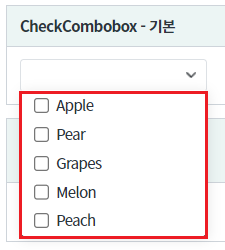
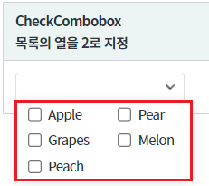
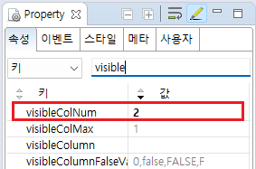
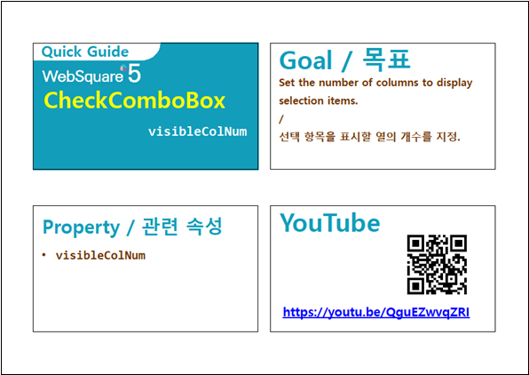

목록의 열 개수를 지정하는 예제입니다.
기본 설정
목록을 2개의 열로 출력하기
목록을 확장합니다.
그림 1.브라우저(Chrome) 실행 예시 - 기본 설정 - 목록이 1개의 열로 표시

목록을 확장합니다.
그림 2.브라우저(Chrome) 실행 예시 - 기본 설정 - 목록이 2개의 열로 표시

컴포넌트의 목록으로 출력될 데이터를 할당합니다. 하드 코딩, 스크립트로 할당, DataList 연동 모두 가능합니다. 데이터 할당하는 예시는 생략합니다.
목록의 데이터 할당 방법은 아래의 링크를 통해 확인할 수 있습니다.
[웹스퀘어5 SP5 개발 가이드] CheckComboBox 항목 설정
링크 : https://docs1.inswave.com/sp5_user_guide#2334962c3b4230e0
컴포넌트의 속성을 정의합니다.
visibleColNum="2" //목록의 열의 개수. 기본값은 1 입니다.
이 속성이 지정된 경우 속성 visibleColMax 은 무시됩니다.
그림 3.웹스퀘어5 SP5 스튜디오의 Property View(속성창) 예시

<!-- CheckCombobox의 소스 본문 예시 --> <xf:checkcombobox visibleColNum="2"> <!-- 중략 --> </xf:checkcombobox>
visibleColNum
[웹스퀘어5 SP5 개발 가이드] CheckComboBox
링크 : https://docs1.inswave.com/sp5_user_guide/8df43d1f59fab704#00d68253341f365d
[웹스퀘어5 SP5 개발 가이드] CheckComboBox 선택 목록의 열 개수
링크 : https://docs1.inswave.com/sp5_user_guide/8df43d1f59fab704#c6e6517d24241358
CheckComboBox 선택 목록의 열 개수
링크 : https://youtu.be/QguEZwvqZRI
